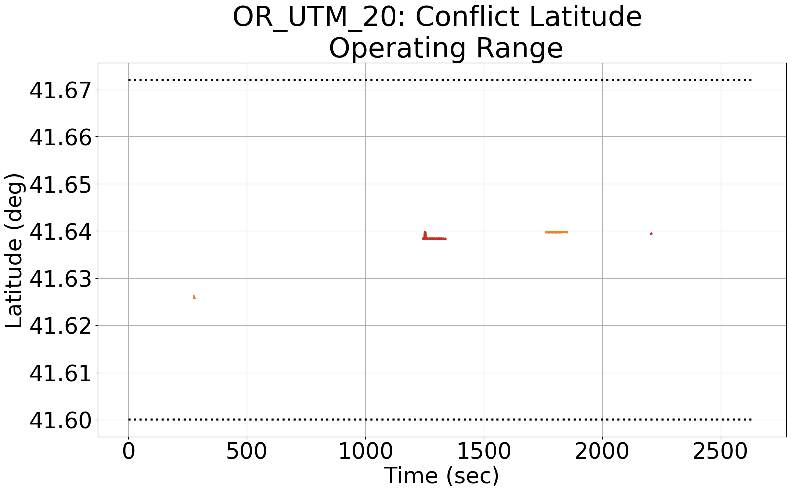
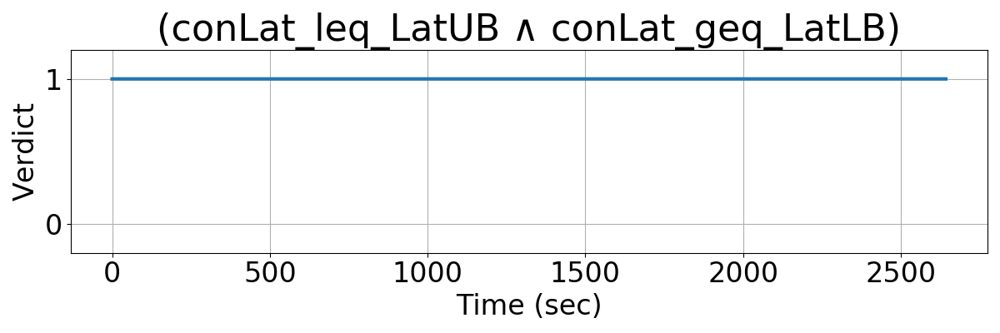
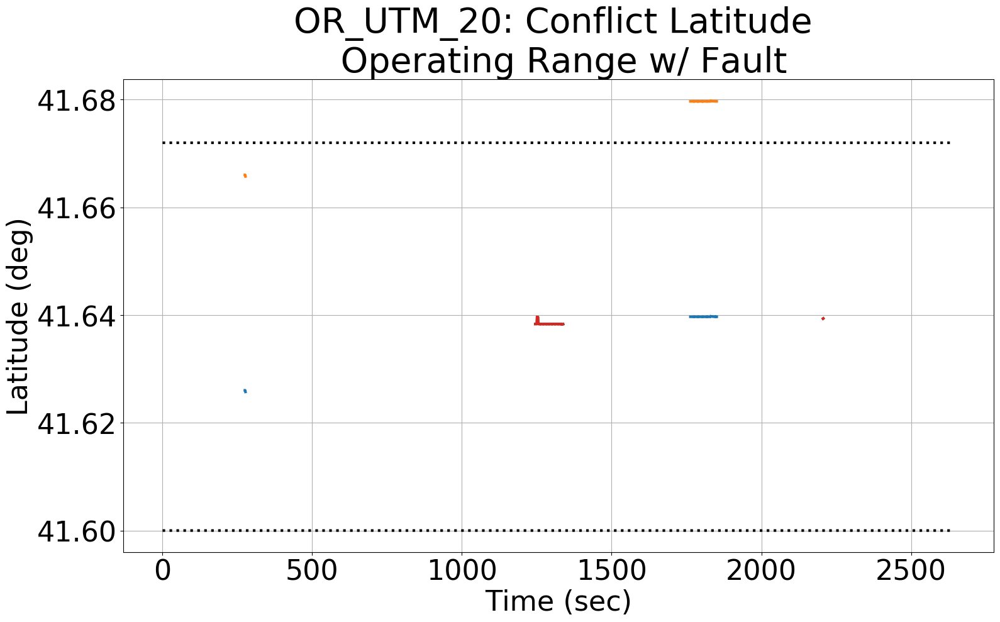
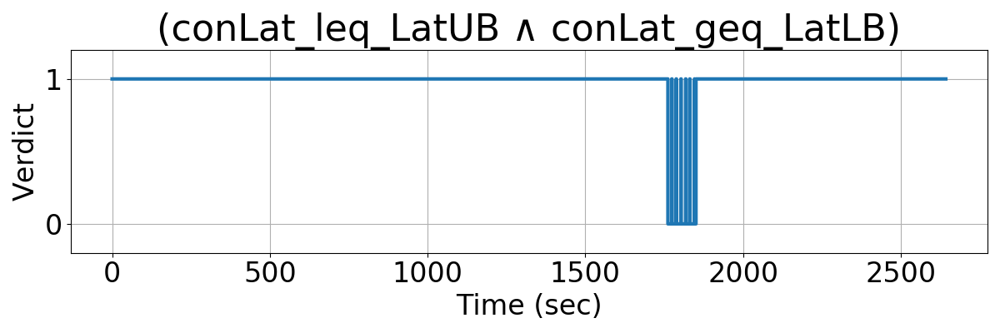
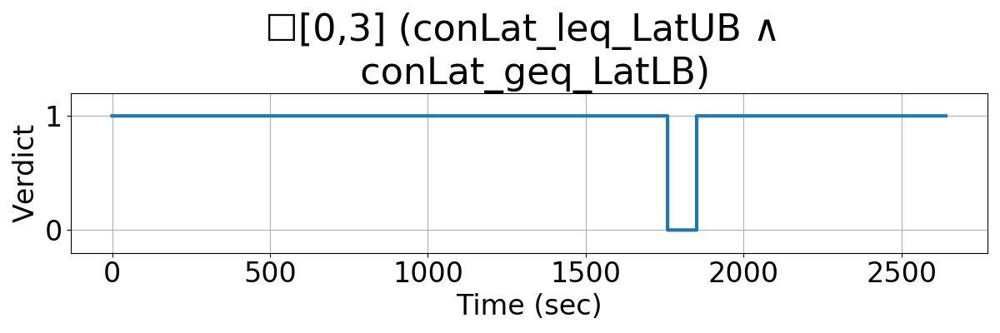

Integrating Runtime Verification into an
Automated UAS Traffic Management System
Matthew Cauwels, Abigail Hammer, Benjamin Hertz, Phillip H. Jones, Kristin Y. Rozier
This webpage contains supplementary specifications for "Integrating Runtime Verification into an
Automated UAS Traffic Management System" by M. Cauwels, A. Hammer, B. Hertz, P. H. Jones, and K. Y. Rozier
OR_UTM_20
Specification Description
The latitude (conLat) of any conflict will be bounded between LatLB and LatUB
Signals Required
conLat
Boolean Conversion of Signals to Atomic Inputs
conLat_leq_LatUB = 1;
for(i = 0; i < NumUAS; i++)
{
// if UAS i's conLat is greater than the upper bounded
// and the value is not "nan"
if((conLat[i] > LatUB) && (conLat[i] == conLat[i])
{
conLat_leq_LatUB = 0;
}
} conLat_geq_LatLB = 1;
for(i = 0; i < NumUAS; i++)
{
// if UAS i's conLat is less than the lower bounded
// and the value is not "nan"
if((conLat[i] < LatLB) && (conLat[i] == conLat[i])
{
conLat_geq_LatLB = 0;
}
} MLTL Specification
Original: conLat_leq_LatUB ∧ conLat_geq_LatLB
Updated: ☐[0,3] (conLat_leq_LatUB ∧ conLat_geq_LatLB)
Fault Explanation
Any conflict should be within the UTM's airspace
Additional Notes
Figures




